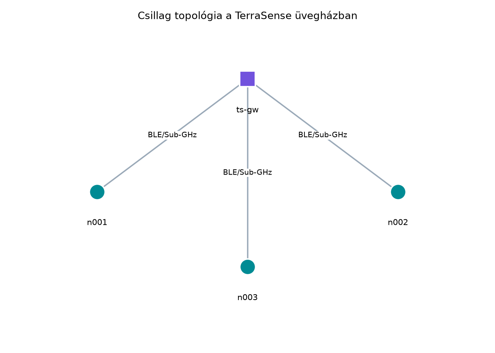
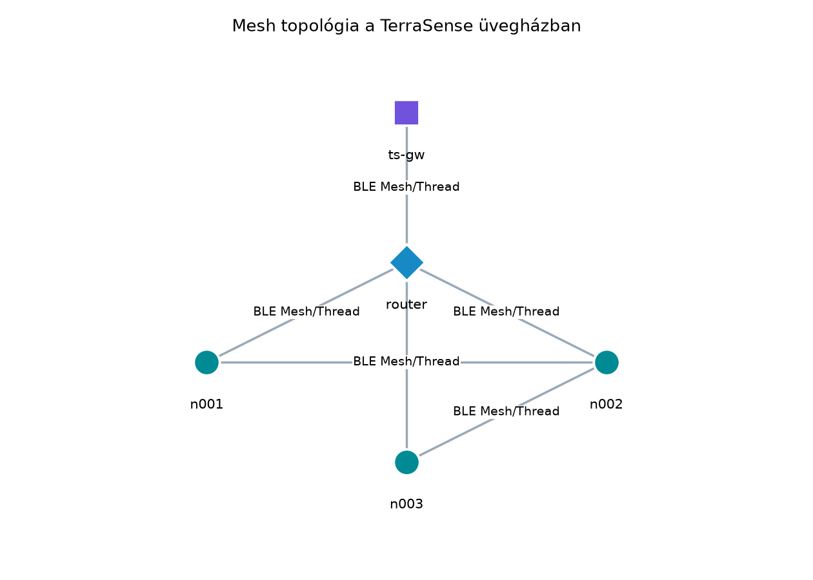
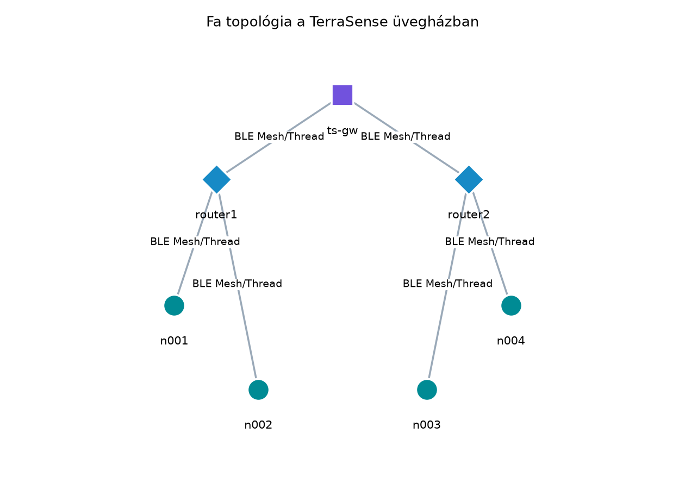

A TerraSense üvegházában nyolc ts-node szenzorcsomópont
méri a hőmérsékletet, páratartalmat és talajnedvességet, és egy
ts-gw gyűjti az adatokat. A tervezés első kérdése, hogy
minden csomópont közvetlenül a gatewayhez küldjön-e, vagy a csomópontok
egymás üzeneteit továbbítva, több ugráson keresztül érjék el a gatewayt.
A válasz nemcsak a rádiós lefedettséget és a költséget határozza meg,
hanem azt is, hogy egy elem lemerülése vagy kiesése után mennyi idő
alatt áll helyre a rendszer, és mekkora akkumulátorra van szükség az
egyes csomópontokban. Ebben az alfejezetben a három alapvető topológiát,
a csillagot, a fát és a mesh-hálót hasonlítjuk össze, különös
tekintettel a továbbító csomópontok energiaköltségére.
Definíció. A hálózati topológia a csomópontok közötti logikai összeköttetések szerkezete: azt írja le, hogy melyik eszköz melyik másik eszközzel kommunikálhat közvetlenül, és milyen útvonalon jut el egy üzenet a forrástól a célállomásig.
Definíció. Csillag topológia esetén minden végpont (szenzorcsomópont) közvetlenül egy központi eszközhöz, tipikusan gatewayhez vagy bázisállomáshoz kapcsolódik. A végpontok egymással nem kommunikálnak közvetlenül; minden forgalom a központon halad át.
Definíció. Mesh topológia esetén a csomópontok több szomszéddal is közvetlen összeköttetésben állnak, és legalább egy részük továbbítja más csomópontok csomagjait. Így egy üzenet több alternatív útvonalon is eljuthat a célhoz, és egy összeköttetés kiesése esetén a hálózat új útvonalat választhat.
Definíció. Fa topológia esetén a csomópontok hierarchikus, gyökeres fastruktúrába szerveződnek. A gyökér általában a gateway, alatta router csomópontok, alattuk pedig végpontok helyezkednek el. Minden csomópontnak pontosan egy szülője van, és az üzenet a gyökér felé vagy onnan lefelé halad.
Definíció. Alvó végpont (sleepy end device) olyan csomópont, amely az idő nagy részében alacsony fogyasztású alvó állapotban van, csak saját mérési adatait küldi el, és nem továbbít más csomópontok forgalmát. Általában akkumulátorról működik.
Definíció. Továbbító csomópont (router node) olyan mesh- vagy fa-hálózati csomópont, amely más csomópontok csomagjait is fogadja és továbbítja. Emiatt rádiójának hosszabb ideig aktívnak, vevő üzemmódban kell lennie, ezért energiafogyasztása nagyobb, mint egy alvó végponté.
Definíció. Gateway mindhárom topológiában az a csomópont, amely a helyi IoT-hálózatot egy másik hálózathoz, jellemzően IP-alapú felhőhöz vagy helyi szerverhez köti. Mesh-alapú IP-hálózatokban a gateway gyakran egyben border router is: a mesh-protokoll és az IP-hálózat közötti határon továbbít.
A három topológiát a következő ábrák szemléltetik.



Az ábrák nélkül is érthetően: a csillagban a ts-gw a
középpont, és minden ts-node pontosan egy rádiós
összeköttetéssel éri el. A mesh-ben a router csomópont és a
végpontok között több lehetséges út is van, így ha például az
n001 és a router közötti összeköttetés
megszűnik, az n001 az n002 közbeiktatásával is
elérheti a gatewayt. A fa topológiában a két router fix hierarchiát
alkot: az n001 csak a router1-en keresztül
kommunikál, és ha a router1 kiesik, az alatta lévő
végpontok elvesztik a kapcsolatot.
A csillag topológia jellemző példája a LoRaWAN, ahol a végpontok egy vagy több gatewayhez küldenek, de egymással nem kommunikálnak, valamint a Wi-Fi infrastruktúra mód, ahol az állomások egy hozzáférési ponthoz kapcsolódnak. A mesh topológiát a Thread, a BLE Mesh és a Zigbee használja. A fa topológia számos LPWAN-hálózatnál és egyes ipari szenzorhálózatoknál jelenik meg, ahol a fix hierarchia egyszerűbbé teszi az útvonalválasztást.
A továbbító és alvó csomópontok megkülönböztetése az energia- és késleltetés-tervezés központi kérdése. Egy alvó végpont csak a saját mintavételi periódusában ébred fel, elküldi az adatot, majd visszaalszik. Egy továbbító csomópontnak azonban folyamatosan vagy legalább gyakran vevő üzemmódban kell lennie, hogy fogadni tudja a gyermekcsomópontjai vagy mesh-szomszédai csomagjait. Késleltetés szempontjából ez előnyös, mert a továbbító azonnal fogad, míg egy alvó végpont csak a következő felébredési ablakban elérhető.
A hibatűrés és az öngyógyítás a mesh topológia legfőbb előnye. A mesh-útválasztási protokollok rendszeresen mérik a linkek minőségét, és egy link megszűnésekor új útvonalat választanak anélkül, hogy a gatewayt vagy a felhőt újra kellene konfigurálni. A fa topológiában ilyen öngyógyítás általában nincs, legfeljebb a szülő újracsatlakoztatása történhet meg nagyobb késleltetéssel. A csillag topológiában a hibatűrés fő eszköze a redundáns gateway vagy az, hogy a végpont több gatewayt is elérhet, ahogyan a LoRaWAN-ban egy adott földrajzi ponton több gateway is veheti ugyanazt az üzenetet.
A gateway minden topológiában az IoT-adatok kilépési pontja. Csillag esetén a gateway maga a központi gyűjtő; mesh- és fa-hálózatban a gateway gyakran border routerként is működik, és a mesh-protokoll címzését IP-címzésre fordítja. A gateway szerepét, biztonsági határként és pufferpontként betöltött funkcióját a A gateway szerepe: híd, puffer, biztonsági határ alfejezet részletezi.
A megfelelő topológia kiválasztása a következő szempontok együttes mérlegelését igényli. A táblázat a három alaptopológia tipikus jellemzőit foglalja össze.
| Szempont | Csillag | Fa | Mesh |
|---|---|---|---|
| Lefedettség | A gateway hatósugarától függ; nagyobb területen több gateway kell | A routerek meghosszabbítják a hatótávot, de fix hierarchiában | A legnagyobb, mert a csomópontok közösen fedik le a területet |
| Energia a végponton | Alacsony, alvó üzemmód jól tervezhető | Alacsony a levél csomóponton, magasabb a routeren | A routereken magas, mert továbbítaniuk és hallgatniuk kell |
| Hibatűrés | Gyenge, a gateway single point of failure | Gyenge, egy szülő kiesése levágja az alhálózatot | Erős, öngyógyító alternatív útvonalakkal |
| Késleltetés | Alacsony, ha a végpont ébren van | Közepes, több ugrás miatt | Közepes vagy magas, az ugrásszámtól és az ébredési ablakoktól függően |
| Konfiguráció és komplexitás | Alacsony | Közepes | Magas, útvonalválasztást és címzést kell kezelni |
| Tipikus technológiák | LoRaWAN, Wi-Fi, BLE kapcsolat | Egyes ipari rádiós rendszerek, LPWAN-átjárók | Thread, BLE Mesh, Zigbee |
Csillagot akkor érdemes választani, ha a csomópontok száma kicsi, a telepítési terület a gateway közvetlen rádiós hatósugarán belül van, és a fő cél az alacsony energiafogyasztás. Mesh akkor indokolt, ha a terület nagy, árnyékolt vagy a megbízhatóság és az öngyógyítás elsődleges követelmény. A fa topológia kompromisszum: jobb lefedettséget ad, mint a csillag, de kisebb komplexitással és energiaigénnyel, mint a teljes mesh.
Tegyük fel, hogy a TerraSense gh1 üvegháza 15 m × 30 m
alapterületű, és nyolc ts-node csomópontot, valamint egy
ts-gw gatewayt telepítünk. A rádiós linkek tervezési
dokumentációja szerint minden ts-node látja a
ts-gw-t legalább olyan jelerősséggel, amely a megbízható
kapcsolathoz szükséges. Ebben az esetben a csillag topológia a legjobb
választás: a csomópontok közvetlenül a gatewayhez küldenek, a gateway
pedig MQTT-be fordítja az adatokat. Ez a döntés a A
gateway szerepe alfejezetben később meghatározza a
ts-gw BLE-központi szerepét.
Ha azonban a telepítés során kiderül, hogy a fém állványzat vagy a növényzet erős csillapítást okoz, és legalább két csomópont nem éri el megbízhatóan a gatewayt, akkor célszerű mesh vagy fa topológiára áttérni. Thread-alapú mesh esetén például két router csomópontot jelölünk ki, amelyek a többi végpont forgalmát továbbítják. A döntés energiaoldalát egy átlagáram-számítással mutatjuk be.
Egy alacsony fogyasztású végpont esetében a következő illusztratív paramétereket tételezzük fel:
Az átlagos áramfelvétel:
ahol .
Behelyettesítve:
Egy mesh-router csomópont esetében a továbbítás miatt a rádió ideje egy részében vételi üzemmódban kell, hogy legyen. Tételezzük fel, hogy a router óránként 3 másodpercet – azaz az idő 5%-át – aktívan hallgatja a szomszédos csomópontok forgalmát, és saját adása továbbra is 10 ms. Ekkor:
Az átlagos áram:
Ez nagyságrendileg 40-szerese az alvó végpont átlagáramának. A példa jól mutatja, hogy a mesh-ben a továbbító szerepű csomópontoknak nagyobb akkumulátorra vagy vezetékes táplálásra van szükségük. A BLE Mesh-hez kapcsolódó energiaköltségeket a Bluetooth Low Energy: hirdetés, GATT, kapcsolatok alfejezet használja fel, amikor a hirdetési és kapcsolati üzemmódokat számszerűsíti.
Továbbvitt eredmény. A TerraSense csillag
topológiára vonatkozó döntése és az itt bemutatott energiaszámítási
módszer a gateway szerepének megtervezéséhez szükséges kiindulópont; a
ts-gw központi gyűjtőként való elhelyezését a A gateway szerepe: híd, puffer, biztonsági határ
alfejezet használja. A mesh-router energiaköltség-számítást a Bluetooth Low Energy: hirdetés, GATT, kapcsolatok
alfejezet viszi tovább a konkrét BLE-üzemmódok elemzésében.
Topológia tervezésekor a legegyszerűbb ellenőrzési módszer a rádiós jelerősség (Received Signal Strength Indication, RSSI) és a csomagvesztési arány (packet loss rate) mérése a telepítési helyszínen. Csillag topológia esetén minden csomópont pozíciójában meg kell győződni arról, hogy a gatewayhez stabil link van. Mesh esetén azt is ellenőrizni kell, hogy a kiválasztott routerek legalább két, egymástól eltérő útvonalat kínálnak-e.
| Hibatünet | Lehetséges ok | Javítás |
|---|---|---|
| Egy csillag-végpont rendszeresen kiesik | A gateway árnyékolt vagy a távolság túl nagy | A gateway áthelyezése, külső antenna, vagy további router beiktatása |
| A mesh-router akkumulátora lényegesen gyorsabban lemerül | A router folyamatosan aktív, mert túl sok forgalmat továbbít | Routerek számának növelése, az aktív hallgatási idő csökkentése, vagy vezetékes táplálás |
| A fa-hálózat egy ága teljesen elveszik | A szülő csomópont kiesett, és nincs alternatív út | Mesh használata, vagy a szülő redundáns kialakítása |
| A mesh-hálózat késleltetése növekszik | Túl sok ugrás, vagy az útvonalat gyakran újraépíti a hálózat | Routerek elhelyezésének optimalizálása, a kritikus forgalom priorizálása |
„A mesh mindig jobb, mert öngyógyító.” A mesh hibatűrése valóban jobb, de ezt nagyobb energiafogyasztással, nagyobb komplexitással és nagyobb rádiós terheléssel éri el. Kis területen, kis csomópontszámnál a csillag topológia energiahatékonyabb és egyszerűbben üzemeltethető.
„A mesh-csomópont is alhat, mert csak továbbít.” A mesh-routernek fogadnia kell a szomszédos csomópontok csomagjait, ezért nem alhat tetszőlegesen hosszan. Ha a router túl sokat alszik, csomagok vesznek el, vagy a hálózat késleltetése megnő.
„A gateway csak protokollfordító, ezért a topológia nem befolyásolja.” A gateway kapacitása, rádiós interfészeinek száma és elhelyezése éppen a topológiától függ. Csillag esetén a gatewaynek minden végponttal közvetlen rádiós kapcsolatban kell lennie, mesh esetén viszont elegendő, ha a routereket éri el.
Magyarázza el, miért fogyaszt többet egy mesh-router csomópont, mint egy ugyanolyan rádióval szerelt alvó végpont, ha mindkettő ugyanannyi saját mérési adatot küld.
Egy Thread-hálózatban egy alvó végpont 120 másodpercenként ébred fel, 15 ms-ig ad, 15 ms-ig hallgat, alvó árama 3 µA, adási árama 25 mA, vételi árama 8 mA. Számítsa ki az átlagos áramfelvételét. Mennyi lenne az átlagos áram, ha ugyanez a csomópont routerként az idő 4%-ában aktív vételi üzemmódban lenne?
Tervezze meg a TerraSense gh2 üvegházának topológiáját
12 ts-node és egy ts-gw gateway esetén, ha a
terület két, rádiósan árnyékolt zónára oszlik, és a zónák között nincs
közvetlen rálátás. Válasszon topológiát, és rajzolja fel a csomópontok
és a gateway közötti logikai kapcsolatokat. Indokolja a döntést.
Egy mesh-hálózatban az egyik router csomópont kiesik. Írja le, hogyan viselkedik a hálózat öngyógyító útvonalválasztása, és milyen mérésekkel ellenőrizné, hogy a forgalom a kiesés után is eljut a gatewayhez.
A mesh-routernek más csomópontok csomagjait is fogadnia kell, ezért rádiójának rendszeresen vagy folyamatosan vevő üzemmódban kell lennie. A vételi üzemmód áramfelvétele lényegesen nagyobb, mint az alvó állapoté. Egy alvó végpont csak a saját adásának és szükséges vételének idejére ébred fel, az idő többi részében alvó üzemmódban van. A nagyobb aktív időarány miatt a router átlagos áramfelvétele többszöröse lehet.
Az alvó végpont periódusideje . Az aktív idő:
Az alvó idő:
Az átlagos áram:
Számláló:
Ezt 120 másodperccel osztva:
Routerként az aktív vételi idő 4%: . Az alvó idő:
Az átlagos routeráram:
Számláló:
Osztva 120-nal:
Ez mintegy 46-szorosa az alvó végpont átlagáramának, ami jól mutatja a továbbító szerep többletköltségét.
Mivel a két zóna között nincs közvetlen rádiós összeköttetés, a
tiszta csillag topológia nem működik, mert a gateway nem érné el mindkét
zónát. A legjobb megoldás egy fa vagy mesh topológia. Ha a zónák közötti
csomópontok képesek továbbítani, akkor zónánként egy-egy router
csomópontot helyezünk el, amelyek a zónán belüli végpontok forgalmát a
gatewayhez továbbítják. A két router között és a gateway felé is legyen
közvetlen rádiós link. A router1 az A zóna, a
router2 a B zóna forgalmát gyűjti, a ts-gw
pedig a fa gyökere. Ha a későbbi telepítés során a routerek közötti
közvetlen link is elérhető, akkor mesh-hálózattá bővíthető a rendszer a
nagyobb hibatűrés érdekében.
Amikor egy router kiesik, a mesh-útválasztási protokoll észleli, hogy a routeren át vezető útvonalak elérhetetlenné váltak, és új útvonalat keres a szomszédos csomópontokon keresztül. A folyamatot a hálózat forgalmának és a csomópontok routing-tábláinak figyelésével lehet ellenőrizni. Gyakorlati mérésként a gatewayen megszámoljuk a beérkező telemetriaüzeneteket, és megfigyeljük, hogy a router kiesése után rövid kiesési idővel ismét minden csomópont adata megérkezik-e. Emellett a végpontokon naplózott csomagküldési hibák és az újracsatlakozási események is jelzik, hogy az öngyógyítás megtörtént.
Az alfejezet a csillag, a fa és a mesh topológiákat hasonlította össze a TerraSense üvegház példáján. A csillag a legegyszerűbb és a legenergiahatékonyabb, de lefedettsége a gateway hatósugarától függ. A fa hierarchikusan bővíti a lefedettséget, de egy szülő kiesése az alhálózat elvesztését okozza. A mesh öngyógyító alternatív útvonalakat kínál, ám a router csomópontoknak folyamatosan vagy gyakran hallgatniuk kell, ezért átlagos áramfelvételük nagyságrendekkel nagyobb lehet. A Gateway minden topológiában az IoT-forgalom kilépési pontja. Továbbvitt eredmények: a TerraSense csillag topológiára vonatkozó döntését a A gateway szerepe: híd, puffer, biztonsági határ, a mesh-router energiaköltség-számítást pedig a Bluetooth Low Energy: hirdetés, GATT, kapcsolatok alfejezet használja tovább.
A fejezethez tartozó forráskiindulópontok a Bluetooth, a LoRa Alliance és az OpenThread dokumentációi, valamint az RFC 6282. Az alfejezetben használt áramfelvételi értékek illusztratívak, és valós rádiómodulok esetén a gyártó adatlapjából kell ellenőrizni azokat. A Thread, a BLE Mesh és a LoRaWAN pontos útvonalválasztási és energiatakarékossági mechanizmusai verziófüggők lehetnek, ezért az aktuális specifikációt ellenőrizni kell. A TerraSense topológiadöntéséhez mérési jegyzőkönyvet érdemes készíteni, amely az adott helyszínre érvényes RSSI- és csomagvesztési értékeket tartalmazza; ilyen mérés a tananyagban nem szerepel ténylegesen mért adatként.